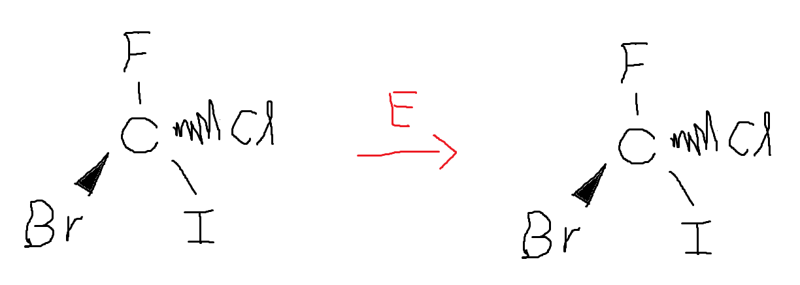
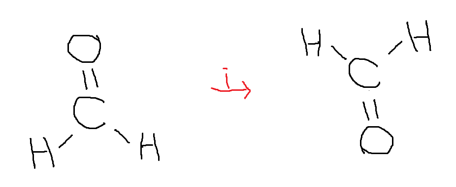
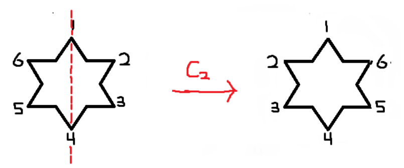
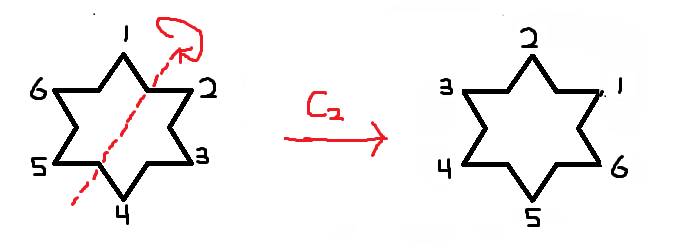
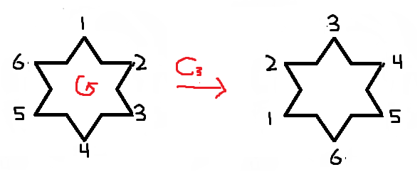
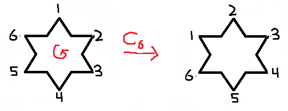
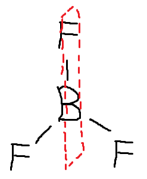
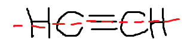
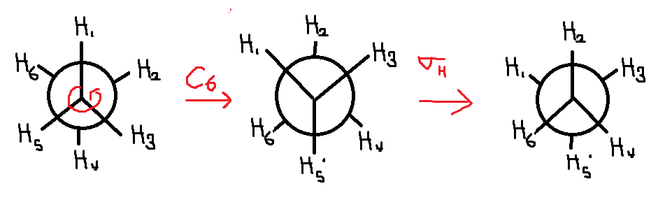

Much of chemistry is describing and classifying molecules according to different parameters. Symmetry is one of these parameters, and describing a molecule in terms of its symmetry allows for unique insight on the behavior of the molecule.
A symmetry operation is an operation done to a molecule, similar to how mathematical operations (addition, subtraction, etc) are done to numbers. If a molecule's initial and final states are indistinguishable after performing the operation, the molecule is said to be symmetric with respect to that operation.
A great website to practice symmetry on is provided by Otterbein University:
Symmetry Resources
There are 5 symmetry operations:
Identity `(E)`
The identity operation `(E)` is the symmetry operation equivalent of multiplying by 1. For example:

The initial and final molecules look identical because the identity operation essentially does nothing. All molecules are symmetric with respect to the identity operation.
Inversion `(i)`
The inversion operation `(i)` involves inverting the molecule through a point in the middle of the molecule. Imagine that the molecule `H_2CO` was plotted on a 3D coordinate axis with each atom having an (x,y,z) coordinate description. Once the molecule undergoes the inversion operation, each atom's coordinate description becomes the negative i.e (1,2,3) becomes (-1,-2,-3). This is what that looks like:

As we can see, the before and after molecules are different. As such, this molecule is said to not possess inversion symmetry.
One important thing to note is that, in inversion symmetry, atoms that are initially coming out of the page will end up being inside the page and vice versa. For example:

If it weren't for the labels on the hydrogens, the molecule would look identical before and after the operation. Thus, we can say that this molecule possesses inversion symmetry.
Rotation `(C_n)`
The rotation operation `(C_n)` involves rotation around a specific axis. The direction of rotation, by convention, is counterclockwise, and the angle of rotation is `(360°)/n` . A `C_6` is therefore a `60°` rotation, `C_4` a `90°` rotation, and `C_3` `120°` . Unlike the identity and inversion operations however, a molecule can have multiple rotation symmetries i.e a single molecule can possess `C_6, C_4` , and `C_3` symmetries.
Successive rotation operations can be often be defined as a single rotation. For example, three successive `C_6` rotations is equivalent to a single `C_3` . Notice that 6 consecutive `C_6 ` operations is equivalent o `E` , the identity operation.
| Angle of Rotation |
Corresponding Symmetry Operations |
60° |
`C_6` |
120° |
2 `C_6` or `C_3` |
180° |
3 `C_6` or `C_2` |
240° |
4 `C_6` or 2 `C_3` |
300° |
5 `C_6` |
360° |
6 `C_6` |
If we had a 6 pointed star and drew an imaginary line through two of the points, we could perform a `C_2` rotation:

Similarly, if we took the same star and drew an imaginary line in the point between two points, we also have `C_2` symmetry there:

The final axis one should pay attention to is right through the center of the star. If rotation is operated on the axis in the center of the star, one gets `C_2`,`C_3`, and `C_6` symmetries:


Thus, we can say that the 6 pointed star has a 3 `C_2` via. the first axis, 3 `C_2` via. the second, 1 `C_2`, 1 `C_3`, and 1 `C_6` through the center for a total of 8 rotational symmetries.
The highest order rotational axis, also called the principle axis, is the axis corresponding to the highest `n` . In this case, the `C_6` axis through the center of the star is the highest order rotational axis.
Reflection `(σ)`
For a molecule to possess symmetry by reflection, the molecule must possess a mirror plane somewhere Consider a butterfly:
Through the mirror plane in the center, the butterfly is symmetric on both sides.
A molecule such as `BF_3` has multiple mirror planes and thus possesses symmetry by reflection

If the mirror plane is parallel to the principle rotation axis, it is called a verticle plane and is denoted `σ_v` . Conversely, if the mirror plane is perpendicular to the principle rotation axis, it is a horizontal plane and is denoted `σ_h`.
Linear molecules sometimes have an infinite number of mirror planes. Consider the axis along the triple bond of the acetylene molecule:

There are an infinite amount of mirror planes that can fit alongside that axis. These are a unique case which will be categorized in the next post.
Improper Rotation `(S_n)`
The improper rotation `(S_n)`, sometimes called a roto-reflection, is a combination of a rotation `(C_n)` followed by a horizontal reflection `(σ_h)` along that axis. `C_2H_6` is an example of a molecule that contains an improper rotation symmetry:

Improper rotations can be difficult to visualize and/or identify. The best way to become comfortable with them is to look at a large number of them.